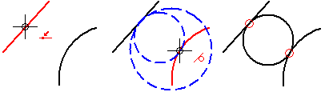
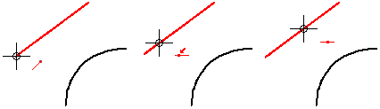
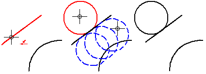

Draw a circle tangent to one or two elements

The IntelliSketch options Point On Element or End Point must be set to draw circles that are tangent to other elements.
-
Choose the Tangent Circle command .
-
Move the mouse cursor along an element until IntelliSketch recognizes a point on element relationship or a key point.

-
Click to make the circle tangent.
-
Do one of the following to define the radius:
-
Move the cursor until the circle is positioned where you want it, and then click.
-
Enter a value in the diameter edit box.
-
Move the cursor until IntelliSketch recognizes a tangent or key point relationship with another element, and then click.
-
-
Before selecting the element to be tangent to, you can define the diameter or radius in the Circle command bar.
-
You can define the radius first to make a circle tangent to the first element, but not fixed in one position.
-
After you type a value in the Diameter or Radius box, move the cursor along the element until IntelliSketch recognizes a point on element relationship, and then click. The circle is then displayed dynamically, and you can move it along the element freely until you make it tangent to another element or key point.

-
If you use the Tangent Circle command when the IntelliSketch options Point On Element and End Point are not set, you can draw a non-tangent circle by clicking two points that represent the diameter.
-
IntelliSketch places relationship handles.
-
You can use the options on the Circle command bar to edit a circle.